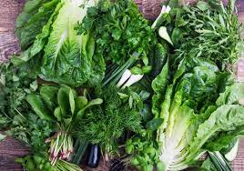

Leaves
Leafy greens grow best in open, level areas where the soil is loose, rich, and well-drained. Although leafy crops tolerate shade better than plants grown for their fruits or roots, at least six hours of sunshine daily will help ensure a high-quality harvest. Avoid planting leafy greens in heavy clay or sandy soils. Leafy vegetables generally have quite high requirements for both phosphorous (P) and potassium (K) and rather low requirements for nitrogen (N). K requirement is often double the requirement of N.